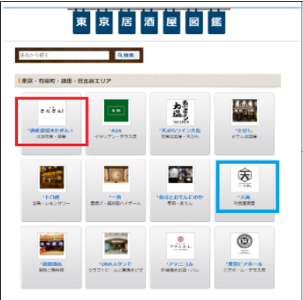
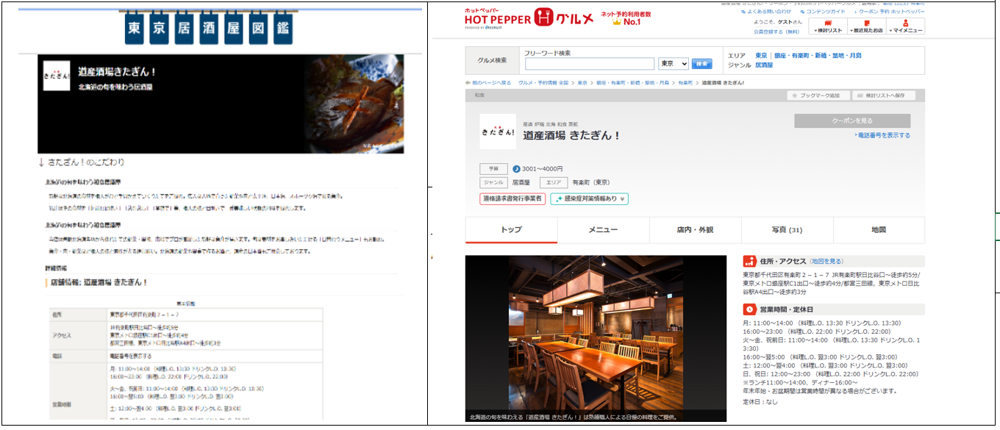
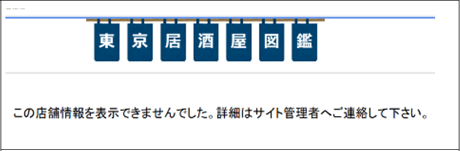
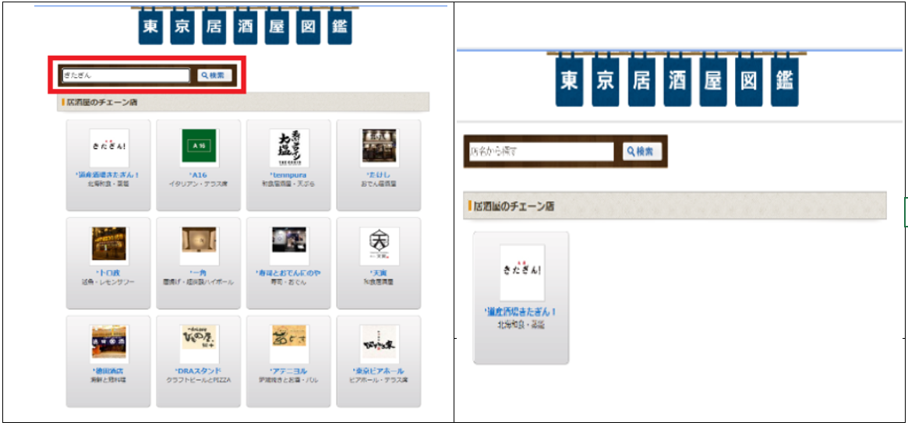

【Azure上でのWebサイト基盤構築】
目的
システム全体のアーキテクト構成の検討に加え、GitHub ActionsによるCI/CDパイプラインを導入。
UIを考慮したフロントエンドを作成し、インフラ構築を含む静的Webコンテンツ実装まで一貫して実施可能なスキルを習得。
① トップページ
ホットペッパー風のWebページを模倣したトップ画面。
赤枠の店舗アイコンをクリックすると該当店舗の詳細ページへ遷移。
青枠のアイコンはデータが存在しない場合で、クリック時にエラーページを表示。

② 詳細情報ページ
店舗の詳細情報が表示され、予約ボタンからホットペッパー等の外部予約サイトにリンク。

③ 店舗情報がない場合のエラー表示
該当する店舗データが存在しない場合、「情報が見つかりません」ページを表示。

④ 検索機能
ユーザー入力に応じて Azure Function を用いたAPI連携により店舗情報を検索・取得。
